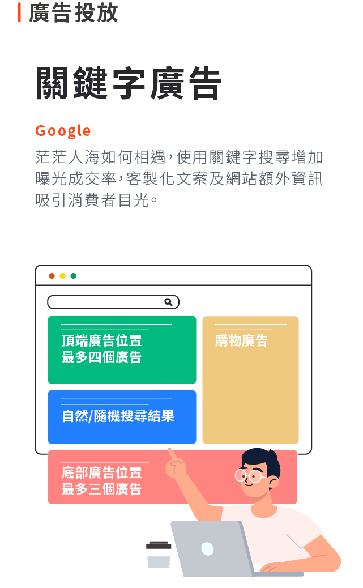
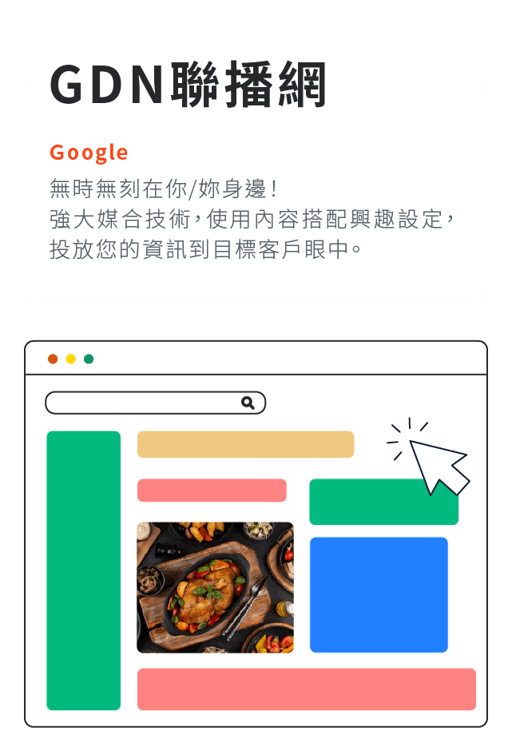
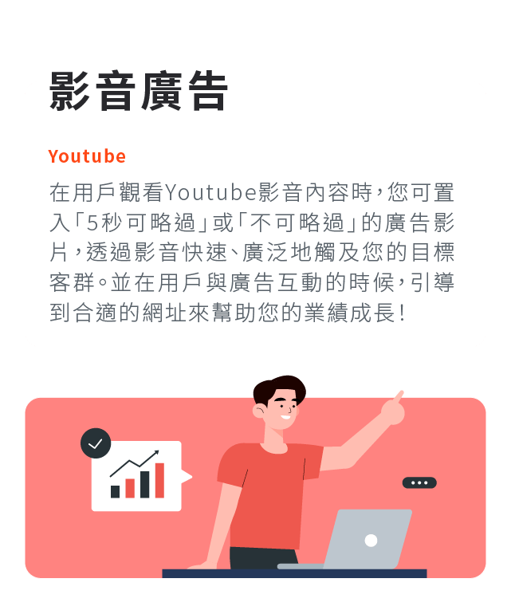
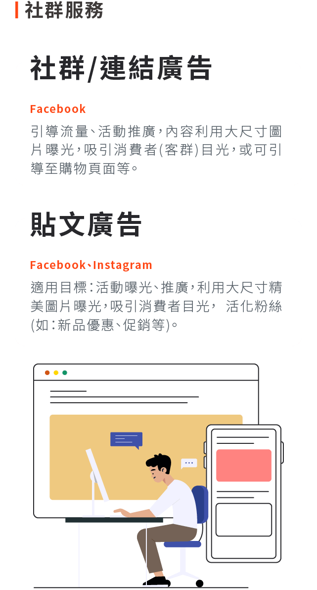
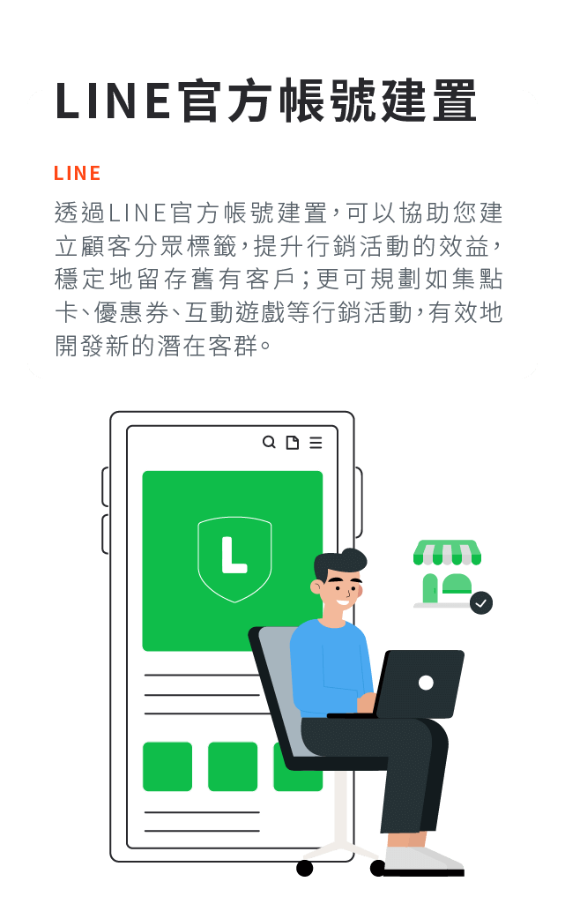
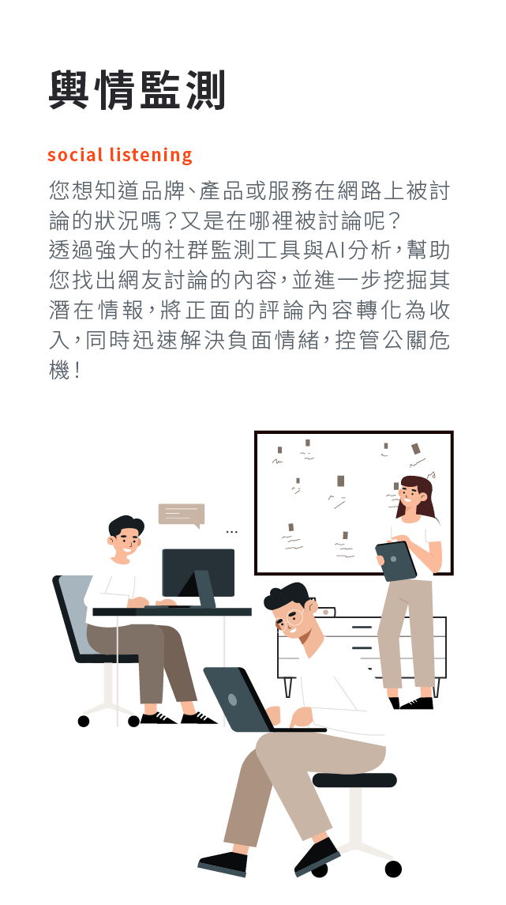
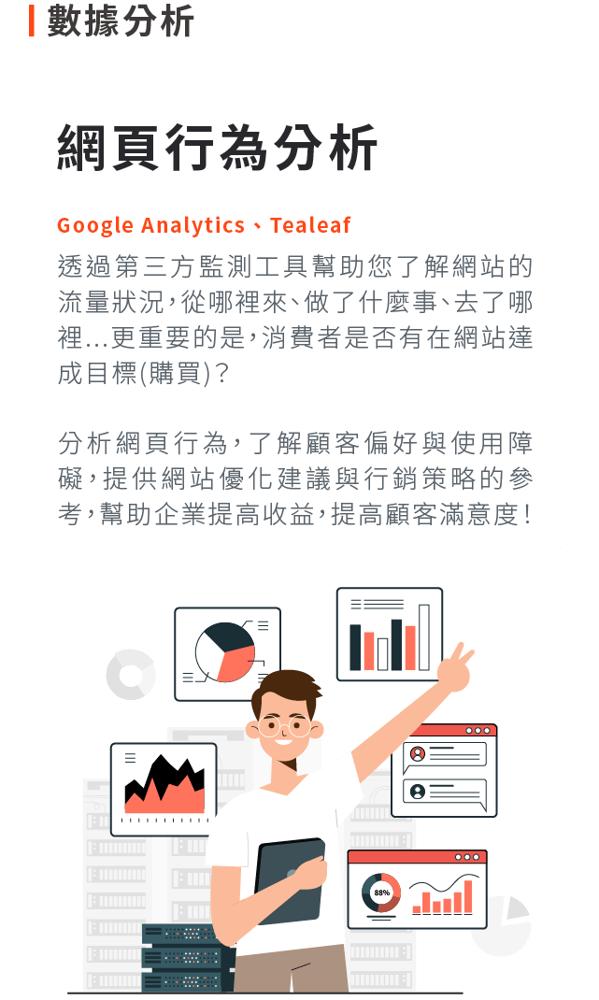

FAQ
奧洛提供 Google 關鍵字廣告、GDN 聯播網、YouTube 影音廣告、Yahoo 原生廣告、LINE 廣告，以及 Facebook、Instagram 廣告的投放服務。
可以。奧洛協助建置 LINE 官方帳號並建立顧客分眾標籤，也可規劃集點卡、優惠券、互動遊戲等行銷活動，留住既有顧客並開發新客。
包含 Facebook、Instagram 的社群經營與貼文廣告，以及社群輿情監測：找出網友對品牌、產品或服務的討論內容與出現的地方。
以 Google Analytics 等網站分析工具，了解網站流量從哪裡來、使用者在網站上做了什麼、去了哪裡，以及是否完成購買或填表等轉換。
填寫網站上的諮詢表單或來電 02-5568-4688，說明產品、目標客群與預算，奧洛會回覆建議的投放與經營方式。